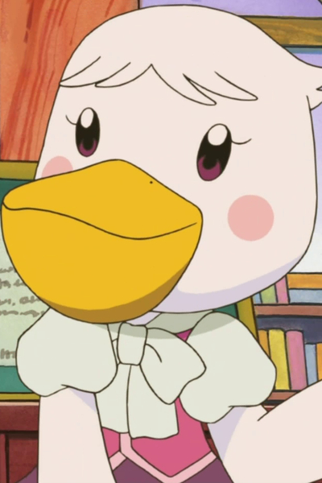

Otoha is a Japanese actor.
- Gender: Female
- Birthday: January 28, 1981
- Hometown: Tokyo, Japan
- Husband: Takashi Fujii
| |
Otoha is a Japanese actor.
|
|---|
|  | Periko | Animal Crossing | Periko/Pelly is a female pelican who works in the Mayor's Office. She enjoys her her work and is the opposite of Phyllis. |
Go Back to Main Page |
Go Back to Homepage |
|
|
|
OR |
|